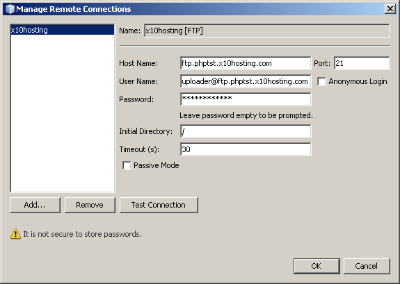
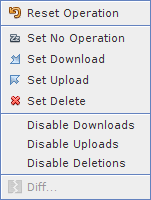
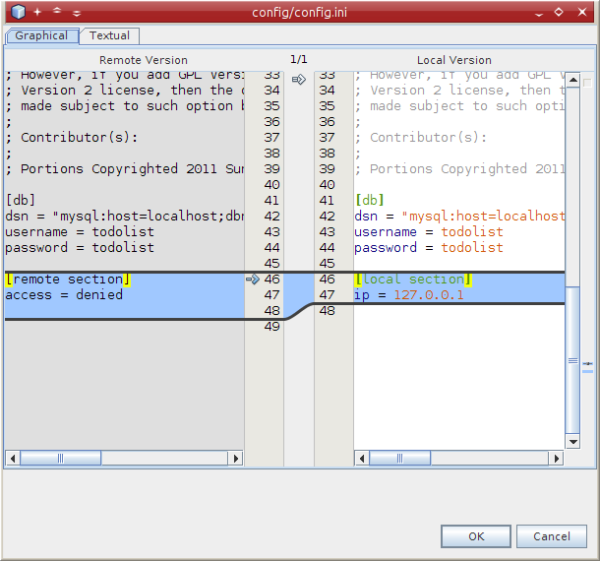

Apache NetBeans
Apache NetBeansLatest release
NetBeans IDEを使用するリモートWebサーバーへのPHPアプリケーションのデプロイ
| This tutorial needs a review. You can open a JIRA issue, or edit it in GitHub following these contribution guidelines. |
通常、実際のPHPアプリケーションはリモート・サーバー上で実行されます。リモート・アプリケーションは、バージョン管理システムか、ファイル転送プロトコル(FTP)のいずれかでアクセスされます。
| NetBeansでは、単独の開発者が単純なプロジェクトで作業するには十分な、FTP/SFTPの基本的なサポートが提供されています。複雑なプロジェクトまたは複数の開発者で作業する場合は、バージョン管理システムを使用してください。NetBeans IDEは多くのバージョン管理システムをサポートしています。たとえば、SubversionおよびGitのチュートリアルを参照してください。複雑なプロジェクトでFTP/SFTPを使用する必要がある場合、各種機能を備えたFTPクライアントとともにIDEを使用すること、およびIDE内のPHPプロジェクトをローカルWebサイトとして編集することを検討してください。 |
JDK 7+Windows 7/Vista: Windows 7およびWindows Vistaのファイアウォールは、JDK 7によって起動された一部のFTP操作をブロックします。回避策については、NetBeansフォーラムを参照してください。
リモート・サーバー上にPHPアプリケーションをデプロイするには、ホスティング・プロバイダでアカウントを登録する必要があります。また、ホスティング・アカウントを持つリモート・サーバー上にMySQLデータベースをデプロイすることもできます。
ユーザー名、パスワード、および電子メール・アドレスはすべて仮のもので、単なる例として使用されています。ユーザーが1週間以上フォーラムに現れない場合、ホスティングの管理によってアカウントがブロックされます。そのため、チュートリアルとまったく同じユーザー名、パスワード、電子メール・アドレス、およびその他の証明書を適用できない場合があります。

Figure 1. このページの内容は、NetBeans IDE 7.2、7.3、7.4および8.0に適用されます
このチュートリアルに従うには、次のソフトウェアとリソースが必要です。
| ソフトウェアまたはリソース | 必須バージョン |
|---|---|
PHPダウンロード・バンドル |
|
PHPエンジン |
バージョン5 |
リモート・サーバー上のホスティング・アカウント およびFTPアカウント |
たとえば、x10Hostingには、 フリーのFTPアカウント・ホスティングが用意されています。 |
PHPデバッガ(オプション) |
リモートでホスティングされるPHPプロジェクトの実行構成の設定
リモートWebサーバー上にホスティング・アカウント、およびソース・ファイルをリモート・サーバーに転送するためのFTPアカウントを持っている場合、PHPプロジェクトをローカルで作成およびデバッグし、それをリモート・サーバー上にデプロイできます。実行構成の概念では、実行構成タイプをローカルWebサイトからリモートWebサイトに変更することによって、同じNetBeans PHPプロジェクト内でワークフローを切り替えることができます。
リモートWebサーバー上でPHPアプリケーションを実行できるようにするには、FTP接続プロファイルを含む実行構成を設定する必要があります。
デフォルトの実行構成を使用するプロジェクトがすでにあり、新しくリモート実行構成を追加する場合は、次のようにプロジェクトをカスタマイズします。
-
プロジェクト・ノードでマウスの右ボタンをクリックし、ポップアップ・メニューから「プロパティ」を選択します。「プロジェクト・プロパティ」パネルが開きます。
-
「カテゴリ」リストから「実行構成」を選択します。「実行構成」パネルが開きます。
-
実行構成タイプを選択し、以降の項で説明しているようにFTPまたはSFTP接続設定を指定します。
リモート・サーバー上にPHPアプリケーション用のNetBeansプロジェクトを作成するか、またはリモートの実行構成をデフォルトで使用するプロジェクトを新規作成するには:
-
IDEを起動し、「ファイル」>「新規プロジェクト」を選択します。「新規プロジェクト」パネルが開きます。
-
「カテゴリ」から「PHP」を選択し、「リモート・サーバー」で「PHPアプリケーション」を選択します。「次」をクリックします。「名前と場所」パネルが開きます。
-
プロジェクト名、アプリケーション・ソース・ファイルの場所、およびプロジェクトの内部ファイルの場所(オプション)を指定します。「次」をクリックします。「実行構成」パネルが開きます。
-
以降の項で説明しているように、FTP接続設定を指定します。
実行構成タイプの選択
「実行構成」パネルで、「実行方法」ドロップダウン・リストから「リモートWebサイト(FTP、SFTP)」を選択します。構成の設定用の非表示領域が表示されます。
リモート・サーバーからのPHPアプリケーション・ウィザードで新規プロジェクトを作成する場合、「実行方法」ドロップダウン・リストから選択する必要はありません。ウィザードは自動的に「リモート接続」パネルを表示します。このパネルには、「プロジェクトURL」、「リモート接続」、および「アップロード・ディレクトリ」フィールドのみが存在します。

FTPまたはSFTP接続設定の指定
FTP接続を作成するには:
-
「FTP接続」ドロップダウン・リストの横にある「管理」をクリックします。「リモート接続の管理」ダイアログ・ボックスが表示されます。
-
「追加」をクリックします。「新規接続を作成」ダイアログ・ボックスが開きます。(最初の接続を定義すると自動的に開く場合があります。)
-
「接続名」フィールドで、新しい接続の名前を入力します。この例では、接続名は
x10hostingです。「型」ドロップダウン・リストから「FTP」または「SFTP」を選択します。「OK」をクリックします。「リモート接続の管理」ダイアログ・ボックスが表示され、「接続名」表示フィールドに新規接続名が表示されます。 -
「ホスト名」フィールドに、FTPアカウント作成の確認メッセージに記載されていたFTPサーバー名を入力します。この例では、FTPサーバーは
nbuser.x10.mxです。 -
「ポート」フィールドで、21を指定します。
-
「ユーザー名」フィールドに、FTPアカウント作成の確認メッセージに記載されていたFTPユーザー名を入力します。この例では、FTPユーザー名は
nbuserです。 -
「パスワード」フィールドに入力します。この例では、パスワードは
qwerty1234です。 -
「初期ディレクトリ」フィールドで、FTPサーバー上のアカウント・ディレクトリの名前を入力します。この例ではアカウント・ディレクトリが指定されていないため、フィールドにスラッシュを入力します。

-
「OK」をクリックします。「実行構成」パネルに戻ります。
-
「アップロード・ディレクトリ」フィールドで、ソース・ファイルがアップロードされる、初期ディレクトリのサブフォルダの名前を入力します。このフィールドの下のプロンプトにFTPホストのURLが表示されます。
-
新規プロジェクトの設定を完了するには、「終了」をクリックします。
ソース・ファイルのリモート・サーバーへのアップロード
プロジェクトに対してリモート接続を選択した後、どの時点(実行時、保存時、または手動)でソース・ファイルをアップロードするかを選択します。
実行時: ソース・ファイルは、プロジェクトを実行するときにサーバーにアップロードされます。 保存時: すべての変更(作成、編集、名前変更、削除)は、リモート・サーバーにすぐに伝播されます。操作に1秒以上かかる場合は、進捗バーが表示されます。 手動: ファイルは自動的にアップロードされません。この項で説明する、IDEの手動アップロード機能を使用する必要があります。

ファイルをプロジェクトからFTPサーバーに手動でアップロードするには、プロジェクトの「ソース・ファイル」ノードを右クリックし、「アップロード」を選択します。同じメニューで、FTPサーバーからファイルをダウンロードすることもできます。

ファイルのアップロードを開始すると、ダイアログが開き、ソース・ファイルがツリー表示されます。このダイアログで、アップロードするファイルとアップロードしないファイルを個別に選択できます。詳細は、「ファイル・アップロード」ダイアログに関するNetBeans PHPのブログ・エントリを参照してください。

ファイルのアップロード中は、アップロードの結果が「出力」タブに表示されます。

リモート同期
開発者が適切なバージョン管理をせずに複数の開発者環境でFTPまたはSFTPを操作する必要がある場合、NetBeans IDEではリモート同期が提供されます。リモート同期を使用すると、プロジェクト・ファイルのローカル・コピーを、FTPまたはSFTPサーバー上のコピーと比較できます。ローカル・コピーをサーバーにアップロードしたり、サーバーのコピーをローカル・マシンにダウンロードできます。ローカル・コピーで作業を開始した後にサーバー上のコピーが更新された場合、NetBeans IDEによって、ファイルの競合があることが警告されます。ファイルの競合がある場合は、NetBeans IDEを使用して、ローカル・バージョンとサーバー上のバージョンとの差分を取得し、行ごとにどちらのバージョンを使用するかを決定できます。
警告: FTPサーバーのタイムスタンプは100%信頼できるわけではないため、リモート同期も100%信頼できるわけではありません。安全な解決策はバージョン管理です。
| プロジェクト全体でリモート同期を実行すると、信頼性がより向上します。個別のファイルに対してリモート同期を実行できますが、リスクが高くなります。 |
リモート同期を実行するには:
-
「プロジェクト」ウィンドウ([Ctrl]-[1])で、同期するPHPプロジェクトのノードを展開します。「ソース・ファイル」ノードを右クリックします。「同期」オプションを含むコンテキスト・メニューが表示されます。

-
「同期」を選択します。IDEでは、リモート・サーバーからファイル名とパスを取得し、リモート同期ダイアログが開きます。
リモート同期ダイアログには、プロジェクト・ファイルの表が表示されます。左側はファイルのリモート・バージョンで、右側はローカル・バージョンです。中央の列には、同期時にIDEで実行される操作を示すアイコンが表示されます。左端には警告アイコンが表示されます。表の最下部には、操作および問題のサマリーが表示されます。エラーの詳細な説明は、表の下に表示されます。表の上には、ダイアログに表示する問題や操作をフィルタリングするための一連のチェックボックスがあります。このダイアログの詳細を確認するには、「ヘルプ」をクリックしてください。

-
表内で複数の項目を選択します。表の最下部のサマリーには、これらの項目のみが含まれます。

-
選択した項目を右クリックします。コンテキスト・メニューに可能な操作が表示されます。

-
項目に「競合を解決」エラー・アイコンが表示されている場合は、その項目を選択します。表の最下部に、エラーの説明が表示されます。

-
エラーがある項目を選択します。ボタンの行、またはコンテキスト・メニューから、「差分」
 を選択します。「差分」ダイアログが開きます。このダイアログで、ファイルのリモート・バージョンとローカル・バージョンの各差分まで下にスクロールします。グラフィックス表示で、リモートの変更をローカル・ファイルに適用するか、または適用を拒否できます。ファイルを手動で編集する場合は、「テキスト」タブに切り替えます。差分の処理が終了したら、「OK」をクリックします。リモート同期ダイアログに戻ります。ファイルに対する操作が「アップロード」に変わり、ファイルが変更されたことを示すアスタリスクがファイルにマークされます。
を選択します。「差分」ダイアログが開きます。このダイアログで、ファイルのリモート・バージョンとローカル・バージョンの各差分まで下にスクロールします。グラフィックス表示で、リモートの変更をローカル・ファイルに適用するか、または適用を拒否できます。ファイルを手動で編集する場合は、「テキスト」タブに切り替えます。差分の処理が終了したら、「OK」をクリックします。リモート同期ダイアログに戻ります。ファイルに対する操作が「アップロード」に変わり、ファイルが変更されたことを示すアスタリスクがファイルにマークされます。

-
競合がない場合は、「同期」をクリックします。「開始前にサマリーを表示」を選択した場合は同期のサマリーが表示されるため、同期を実行する前に複数回、操作を確認できます。操作を承認する場合は、「OK」をクリックします。

IDEで同期が実行されます。IDEによって開いたウィンドウで、同期の進捗を確認できます。

PHPアプリケーションの実行
リモート・サーバー上でPHPアプリケーションを実行するには:
-
「プロパティ」パネルの「実行方法」ドロップダウン・リストから、リモートWebサイトが選択されていることを確認します。
-
実行構成の設定を確認します。
-
プロジェクトがメインとして設定されている場合は、ツールバーで
 をクリックします。
をクリックします。 -
プロジェクトがメインとして設定されていない場合は、プロジェクト・ノードにカーソルを置き、ポップアップ・メニューから「実行」を選択します。
リモートMySQLデータベースの使用
x10Hosting.comのようなリモート・ホスティング・サービスを使用すると、通常、そのサーバー上にMySQLデータベースを設定できます。リモート・ホスティング・サービスが提供するツールを使用して、データベースの作成、ユーザーの管理、およびデータのコピー、読取り、更新、削除(CRUD)を行うことができます。
たとえば、x10Hosting.comを使用している場合は、x10Hosting cPanelにログオンしてMySQLデータベース・パネルを開くことによって、MySQLデータベースを作成できます。また、MySQLデータベース・パネルでは、ユーザーの作成、データベースへのユーザーの割当て、およびユーザーへの権限の付与を行うことができます。次に、「phpMyAdmin」パネルでCRUDツールを使用できます。
リモート・データベースのCRUDツールを操作する別の方法として、NetBeans IDEのCRUD機能を使用してローカル・データベースを操作する方法があります。その後、ローカル・データベースをリモート・データベースにコピーまたはダンプできます。x10Hosting.comでは、「phpMyAdmin」パネルを使用してローカル・データベースをアップロードできます。
users@php.netbeans.orgメーリング・リストに登録することによって、NetBeans IDE PHP開発機能に関するご意見やご提案を送信したり、サポートを受けたり、最新の開発情報を入手したりできます。